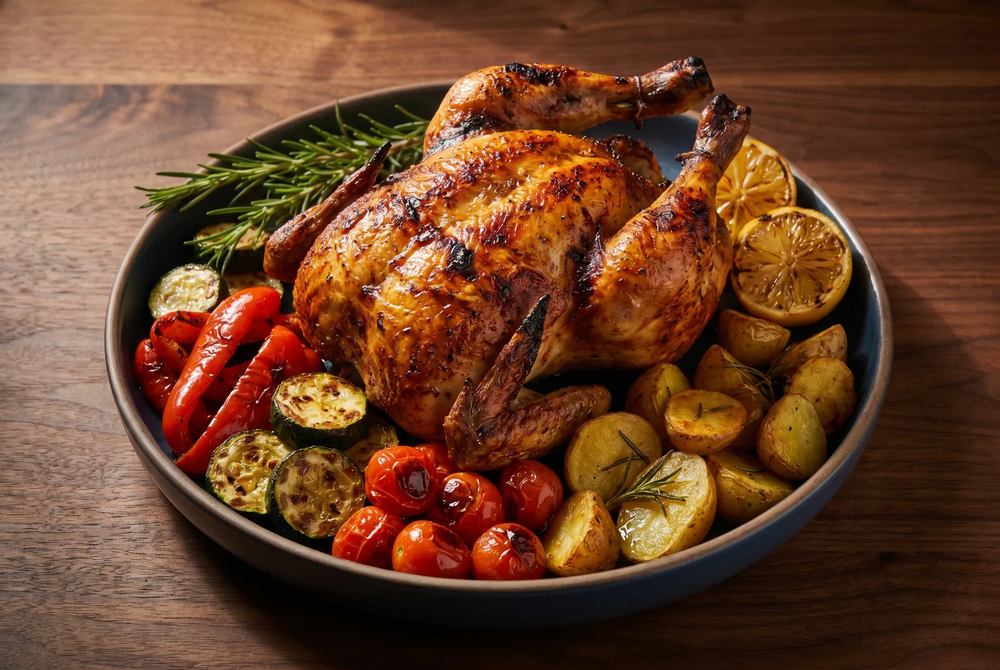
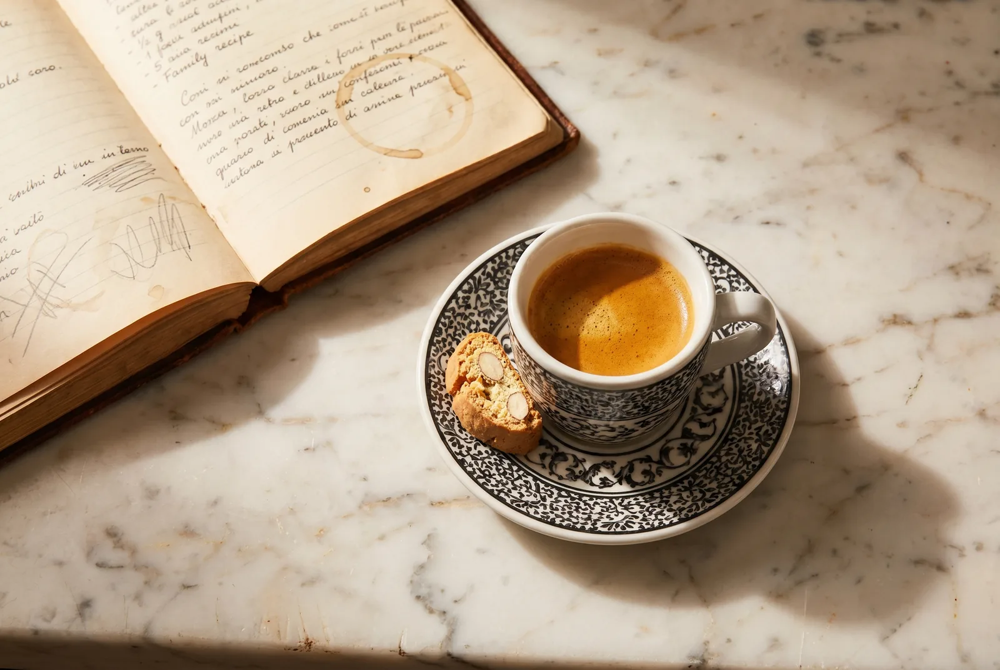

Fort Wayne is established
General "Mad" Anthony Wayne raises an army post at the confluence of three rivers — the St. Marys, the St. Joseph, and the Maumee. The settlement that grows around it carries his name.
How Jimmy D'Angelo and Tom Casaburo took a quiet Fort Wayne strip mall in 1977 and turned it into a city's idea of Italian cooking.

Jimmy D'Angelo had been cooking professionally most of his adult life. Tom Casaburo had a recipe for a peppery Caesar he wouldn't share with anyone — until he and Jimmy decided to open a place together. They picked a modest storefront on Coldwater Road, knocked out a wall, and started serving the food they would have eaten at their own family tables.
Word travelled the way it always does in Fort Wayne — slowly, then very fast. Tables booked out a week in advance. The bread baskets came back empty in seven minutes flat. There was a dish at the center of every table that no one quite knew how to describe. They started calling it, simply, the Casaburo Salad.
“We never set out to be famous. We just wanted the bread to be warm and the sauce to taste like home.”
— Tom Casaburo, founding partner
Inside ten years, that single dining room had a wood-burning pizza oven, a wood-fired rotisserie, and a list of butter-and-cheese sauces no other Fort Wayne kitchen had bothered to put on a menu. Casa wasn't an idea anymore. It was a habit.

Fort Wayne's table has always been bigger than ours. Drag right to walk through the moments that built the city — and where Casa stepped in.
Drag · scroll · explore
General "Mad" Anthony Wayne raises an army post at the confluence of three rivers — the St. Marys, the St. Joseph, and the Maumee. The settlement that grows around it carries his name.
East Central becomes the home of Fort Wayne's earliest German and Italian immigrants — laying the foundation for a neighborhood that would still feel like home a century later.
Railroads, foundries, and the Wabash & Erie Canal pull Italian families to Fort Wayne in numbers — many take work at the rail yards and bring their grandmothers' recipes with them.
Tom Casaburo, raised on his own family's recipes, is already cooking professionally and dreaming of running a kitchen where the bread comes out hot all night long.
Jimmy D'Angelo and Tom Casaburo sign a lease and open a small dining room. The Casaburo Salad debuts week one. The bread basket is bottomless from day one.
Casa installs Fort Wayne's first proper wood-burning brick pizza oven. The restaurant goes through three cords of hardwood that first winter alone.

Casa quietly puts a full board of butter, cream, and aged-cheese sauces on the menu — alfredo, brown butter, romano cream — long before they were Midwest staples.
Jimmy passes the keys to Tom and Sharon Casaburo. The kitchen doesn't change a comma. Their kids — Jim and T — grow up tying aprons in the back hall.
A slow-spinning rotisserie joins the line. The Pollo al Griglia, paired with charred Italian vegetables, becomes a Casa staple — and a Fort Wayne first.

A second Casa lights its ovens on Stellhorn Road. Same recipes, same bread basket, the same sense that you've walked into someone's house at 7 p.m.
Three rooms now. The Casaburo dressing starts being bottled by request — neighbors keep asking to buy it for home — and quietly becomes the world's smallest exported product.
Fort Wayne's Reader's Choice award lands at the door for the umpteenth time. The kids grew up. The bread is still warm. Tom and Sharon still run the dining room three nights a week.
The fourth dining room opens on West Jefferson. The Casaburo brothers debate the new pasta cookers in Italian for ninety minutes. The pasta still comes out al dente.

Tom and Sharon still walk the floor. Jim and T run daily ops across all four locations. The bread basket is still warm, and the sauce on the back burner is the same one that simmered in 1977.
Fort Wayne in the late seventies was a meat-and-potatoes town with one good red sauce restaurant. Casa changed the conversation, more or less the way new dishes change conversations: by being too good to ignore. The wood-burning oven came in 1982. The wood-fired rotisserie followed a decade later. Long-cooked butter and cream sauces sat on the menu as if they'd always been there.
None of it was an act of fashion. Tom and Jimmy did what tasted right. The town caught up.
Jim and T Casaburo grew up doing what restaurant kids do — washing dishes, folding napkins, learning the difference between a pot of marinara and a pot of slow-cooked sugo by the smell. Tom and Sharon never made them stay. They never quite left, either.
Today Jim and T run daily operations across all four restaurants. Tom and Sharon are still on the floor most nights. There is still a single hand-written ledger somewhere in a back office that has the original 1977 dressing recipe on a coffee-stained page.
“Investing in our local community is an investment for a lifetime of generations.”
— Casa Restaurant Group, on why the door is always open
Casa runs fundraisers, donates to schools, keeps a banquet room open for first communions and 50th wedding anniversaries. It hosts the team after a high-school football game and the family after a long Saturday at the hospital. It is, in the most ordinary way, where Fort Wayne eats when something matters.

Pull up a chair, order takeout, or just come say hello. Four Fort Wayne tables, one family, one shared pot of sauce.